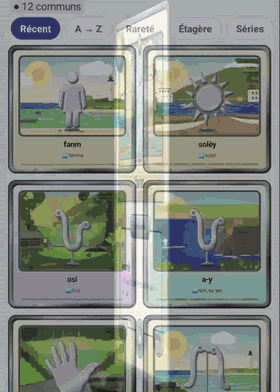
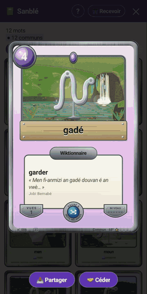
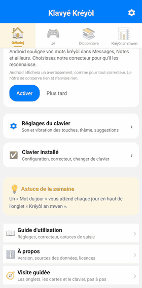
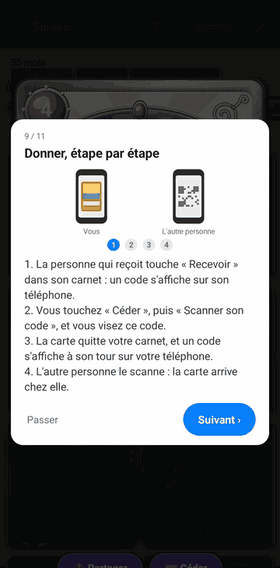

Les cartes en papier découpé, et une visite guidée
Ce mois-ci, les paysages des cartes changent de peau, et l'application apprend à se présenter elle-même. Voici ce que c'est, et où le trouver.
Vos mots deviennent des cartes
En plus du clavier, l'application propose de petits jeux de mots en kréyòl. Chaque mot que vous trouvez devient une carte à collectionner : le mot, son sens en français, une phrase d'un auteur où il apparaît, et un paysage de Guadeloupe. Vos cartes sont rangées dans Sanblé, qui veut dire « rassembler ».
Trente paysages en papier découpé
Les trente lieux de Guadeloupe qui ornent les cartes ont tous été redessinés, d'après des photos, comme des feuilles de papier de couleur découpées et posées les unes sur les autres. On voit le grain du papier, et une fine tranche de carton sur le bord de chaque feuille.
Quand vous ouvrez une carte en grand, le paysage vit : l'eau des cascades tombe, la mer scintille, la vapeur monte des Bains Jaunes, le phare de l'îlet du Gosier s'allume le soir. Et les bêtes bougent : les touloulous sur la plage, l'iguane à Petite-Terre, les écrevisses de la Cascade aux Écrevisses, la baleine au large de la Grande Vigie.

Dans l'application, touchez l'onglet Jé, puis « Ouvrir » sur le bandeau Sanblé en haut. Touchez une carte pour l'ouvrir en grand et voir son paysage s'animer.
Un dessin pour 43 mots
Certaines cartes portent maintenant un petit dessin au milieu du paysage, qui montre ce que veut dire le mot : une silhouette pour fanm, un soleil pour solèy, une main pour men. 43 mots en ont un pour commencer. Ce sont des dessins libres de droits, choisis un par un, et seulement pour les mots qui n'ont qu'un seul sens, pour ne pas induire en erreur.
La rareté d'une carte se lit aussi d'un coup d'œil, en étoiles : une pour un mot courant, jusqu'à quatre pour un mot très rare.

Une visite guidée, et un « ? » pour la revoir
Vous ne savez pas à quoi sert chaque onglet ? L'application vous le montre. À la première ouverture, une bulle présente chaque partie de l'écran l'une après l'autre : les onglets, les réglages du clavier, les cartes, et les trois gestes du clavier. On avance d'un toucher, et on peut la passer à tout moment.
La visite des cartes explique aussi comment donner une carte à quelqu'un, de téléphone à téléphone, avec une petite animation des deux écrans côte à côte. Pas besoin d'internet : l'appareil photo lit seulement un code affiché par l'autre téléphone.


Touchez le « ? » en haut à gauche de l'écran, à tout moment. Il propose quatre chapitres : les onglets et les réglages, le clavier en trois gestes, les cartes, et partager ou échanger une carte. Pour tout lire au calme, le « Guide d'utilisation », au pied de la première page, explique toute l'application avec des mots simples.
Le clavier en trois gestes
- Touchez un mot proposé dans la barre au-dessus des lettres : il s'écrit en entier.
- Appuyez longtemps sur une lettre pour trouver ses accents : sur le e pour é, è, ê, sur le o pour ò.
- Glissez le doigt sur la barre d'espace vers la gauche ou la droite pour déplacer le curseur dans votre texte.
An kréyòl nou ka palé, an kréyòl nou ka maké.
Installer sur Google PlayCes nouveautés sont déjà dans la dernière version publiée sur GitHub, en attendant leur arrivée sur le Play Store. Toutes les autres sont sur la page Nouveautés.